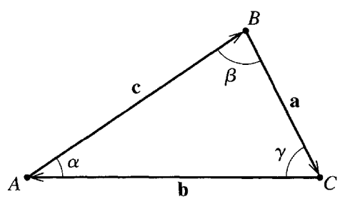

Homework 1 (Due 5 Sep)#
Due at midnight
Total points: 100
Practicalities about homeworks and projects
You can work in pairs or by yourself. If you work as a pair you can hand in one answer only if you wish. Remember to write your name(s)! You may collaborate with others (optimal group size 3-4).
Homeworks are available approximately ten days before the deadline. You should anticipate this work.
How do I(we) hand in? You can hand in the paper and pencil exercises as a single scanned PDF document. For this homework this applies to exercises 1-5. Your jupyter notebook file should be converted to a PDF file, attached to the same PDF file as for the pencil and paper exercises. All files should be uploaded to Gradescope.
For any exercise marked Complete Individually, you must do so as these are reflective exercises for you.
Instructions for submitting to Gradescope.
Exercise 1 (15 pt), math reminder, properties of exponential function#
The first exercise is meant to remind ourselves about properties of the exponential function and imaginary numbers. This is highly relevant later in this course when we start analyzing oscillatory motion and some wave mechanics. The discovery relating trigonometric functions and exponential functions is attributed to Leonhard Euler (1707-1783). There’s two great books on the development formula, its importance to math and science, its applications:
If videos are more your thing, these two YouTube videos from MetaMaths and Veritasium are worth a watch. They both cover the history of complex numbers, the Veritasium videos is quite a bit longer.
The True History of Complex Numbers (5 minute video)#
How Imaginary Numbers Were Invented (23 minute video)#
Note: Jupyter Notebooks do not support embedding some YouTube videos directly with
<iframe>. Instead, here is a preview image linked to the video:

(Click the image above to watch “How Imaginary Numbers Were Invented” on YouTube.)
As physicists we should feel comfortable with expressions that include \(\exp{(\imath \omega t)}\) and \(\exp{(\imath 2\pi f t)}\). Here \(t\) could be interpreted as time and \(\omega\)/\(f\) as a frequency. We know that \(\imath = \sqrt(-1)\) is the imaginary unit number.
1a (4pt): Perform Taylor expansions in powers of \(t\) of the functions \(\cos{(2\pi f t)}\) and \(\sin{(2\pi f t)}\). Show your work in producing those Taylor expansions. If you were to use \(2\pi f t\) as the expansion parameter, would anything change? Think here about the coefficients of each term and where they come from in the different ways of doing the calculation.
1b (3pt): Perform a Taylor expansion of \(\exp{(i2\pi f t)}\) again using \(t\) as your expansion parameter. Show your work in producing that Taylor expansion.
1c (2pt): Using parts (a) and (b) here, you want make the mathematical argument that \(\exp{(\imath2\pi f t)}=\cos{(2\pi f t)}+\imath\sin{(2\pi f t)}\), and what information from each Taylor series help you make that argument.
We avoid the word ‘proof’ here or the actions ‘prove’ or ‘show’ because we don’t often need formal mathematical proofs to communicate our understanding. That language might slip from time-to-time, but no formal mathematical proof is needed unless explicitly requested.
1d (2pt): How can you use your understanding of Taylor series to “show” that \(\ln{(−1)} = \imath\pi\)? Demonstrate that “proof.”
1e (4pt): Individual Example (One per partner) Show that you can prove another mathematical relationship (of your choosing) based on the properties you’ve discovered in this problem. Explain how your result connects to any of the results parts a-d. Remember, you are not expected to perform a formal proof.
Exercise 2 (15 pt), Vector algebra#
As we have quickly realized, forces and motion in three dimensions are best described using vectors. Here we perform some elementary vector algebra that we wil need to have as tacit knowledge for the rest of the course. These operations are not typically taken with specific numbers, but rather with vectors in general. When we need to, we use the notation \(\boldsymbol{a}=(a_x,a_y,a_z)\) for vectors in three dimensions.
To get us started the first two questions below include numerical values, but the third question expects you to use the general notation.
2a (4pt) One of the many uses of the scalar product is to find the angle between two given vectors. Find the angle between the vectors \(\boldsymbol{a}=(1,3,9)\) and \(\boldsymbol{b}=(9,3,1)\) by evaluating their scalar product.
2b (5pt) For a cube with sides of length 1, one vertex at the origin, and sides along the \(x\), \(y\), and \(z\) axes, the vector of the body diagonal from the origin can be written \(\boldsymbol{a}=(1, 1, 1)\) and the vector of the face diagonal in the \(xy\) plane from the origin is \(\boldsymbol{b}=(1,1,0)\). Find first the lengths of the body diagonal and the face diagonal. Use then part (2a) to find the angle between the body diagonal and the face diagonal. Make sure to include a sketch of your cube, the relevant vectors, and the angle you find.
2c (6pt) Consider two arbitrary vectors in three dimensions, \(\boldsymbol{a}=(a_x, a_y, a_z)\) and \(\boldsymbol{b}=(b_x, b_y, b_z)\). Prove that the cross product \(\boldsymbol{a} \times \boldsymbol{b}\) results in a vector that is perpendicular to both \(\boldsymbol{a}\) and \(\boldsymbol{b}\). Use the properties of the dot product and the cross product to support your proof. Include a diagram illustrating the vectors and their cross product.
History of Vector Notation (23 minute video)#
The notation that we use for vectors in fairly recently developed in mathematical history. The development of calculus, geometry, and physics in the 17th century required new notations. The history of mathematical notation is very interesting in that these tools and symbols that we developed helped us to solve new and more advanced problems.
If you want to learn a lot more about the history of vector notation and why we have different conventions in different fields. It’s about Quaternions.
Exercise 3 (10 pt), More vector mathematics#
3a (2pt) Show (using the fact that multiplication of reals is distributive) that \(\boldsymbol{a}\cdot(\boldsymbol{b}+\boldsymbol{c})=\boldsymbol{a}\cdot\boldsymbol{b}+\boldsymbol{a}\cdot\boldsymbol{c}\).
3b (3pt) Use this result to argue that the small amount of work \(dW\) done over a distance \(d\mathbf{r}\) only results from \(F_{\parallel}\) the force component along the instantaneous velocity \(\mathbf{v}\) and not \(F_{\perp}\), the component perpendicular to it. What about the full integral of the work \(W = \int_P dW\) where \(P\) is some path? From which force does the work get done by, \(F_{\parallel}\), \(F_{\perp}\), both, neither?
3c (2pt) Show that (using product rule for differentiating reals) \(\frac{d}{dt}(\boldsymbol{a}\cdot\boldsymbol{b})=\boldsymbol{a}\cdot\frac{d\boldsymbol{b}}{dt}+\boldsymbol{b}\cdot\frac{d\boldsymbol{a}}{dt}\)
3d (3pt) Use this to demonstrate that the time rate of change for the kinetic energy, \(dK/dt\) for a circular orbiting object is zero. Start from definition of kinetic energy that uses the dot product: \(K = 1/2 m \mathbf{v} \cdot \mathbf{v}.\) It might help to draw a sketch of the velocity, force, and acceleration vectors.
Exercise 4 (10 pt), Algebra of cross products#
4a (3pt) Show that the cross products are distribuitive \(\boldsymbol{a}\times(\boldsymbol{b}+\boldsymbol{c})=\boldsymbol{a}\times\boldsymbol{b}+\boldsymbol{a}\times\boldsymbol{c}\).
4b (2pt) Use this result to demonstrate that the sum of the torques about a single pivot for any number of forces \(\mathbf{F}_{i}\) is equal to the torque by the net force \(\mathbf{F}_{net}= \sum \mathbf{F}_{i}\). How might this simplify future work?
4c (3pt) Show that \(\frac{d}{dt}(\boldsymbol{a}\times\boldsymbol{b})=\boldsymbol{a}\times\frac{d\boldsymbol{b}}{dt}+\frac{d\boldsymbol{a}}{dt}\times \boldsymbol{b}\). Be careful with the order of factors.
4d (2pt) Use this result to show what the time derivative of angular momentum can be reduced to. Start from \(\mathbf{L} = \mathbf{r} \times \mathbf{p}\); you can assume \(v\) is sufficiently small so that \(\mathbf{p} = m \mathbf{v}\).
Exercise 5 (10 pt), Area of triangle and law of sines#
The three vectors \(\boldsymbol{a}\), \(\boldsymbol{b}\), and \(\boldsymbol{c}\) are the three sides of a triangle ABC. The angles \(\alpha\), \(\beta\), and \(\gamma\) are the angles opposite the sides \(\boldsymbol{a}\), \(\boldsymbol{b}\), and \(\boldsymbol{c}\), respectively as shown below.

(Figure: A triangle with sides \(\boldsymbol{a}\), \(\boldsymbol{b}\), and \(\boldsymbol{c}\) and angles \(\alpha\), \(\beta\), and \(\gamma\); reproduced from JRT.)
5a (5pt) Show that the area of the triangle can be given by any of these three equivalent expressions: \(A=\frac{1}{2}|\boldsymbol{a}\times\boldsymbol{b}|=\frac{1}{2}|\boldsymbol{b}\times\boldsymbol{c}|=\frac{1}{2}|\boldsymbol{c}\times\boldsymbol{a}|\).
5b (5pt) Use the equality of the three expressions for the area of the triangle to show that \(\frac{\sin{\alpha}}{a}=\frac{\sin{\beta}}{b}=\frac{\sin{\gamma}}{c}\), which is known as the Law of Sines.
Exercise 6 (40pt), Numerical elements, getting started with some simple data#
This exercise needs to be worked on in a Jupyter notebook, but should be handed in as a PDF. Remember to write your name(s).
Our first numerical attempt will involve either reading data from file or just setting up two vectors, one for position and one for time. Our data are from video capture of Usain Bolt’s 2008 World Record Run.
Note: Jupyter Notebooks do not support embedding some YouTube videos directly with
<iframe>. Instead, here is a preview image linked to the video:

The data show the time used in units of 10m.
| i | 0 | 1 | 2 | 3 | 4 | 5 | 6 | 7 | 8 | 9 | 10 |
|---|---|---|---|---|---|---|---|---|---|---|---|
| x[m] | 0 | 10 | 20 | 30 | 40 | 50 | 60 | 70 | 80 | 90 | 100 |
| t[s] | 0 | 1.85 | 2.87 | 3.78 | 4.65 | 5.50 | 6.32 | 7.14 | 7.96 | 8.79 | 9.69 |
Before we however venture into this, let’s make sure we understand the goal. We want to understand the kinematics of Usain’s run. That means to find the position, velocity, and acceleration as functions of time. Here we will use numerically computed differences from the table above.
\(\mathbf{v}_{avg} = \dfrac{\mathbf{v}(t+dt)-\mathbf{v}(t)}{dt}\)
At what time is \(\mathbf{v}_{avg}\)? About halfway between \(t+dt\) and \(t\)!
So for this data do the following:
6a (6pt) Read in the data from a file (you create it) or store the data in arrays.
6b (6pt) Plot the position as function of time. What do you notice about the motion?
6c (14pt) Compute the mean (average) velocity using for every interval \(i\) plot these two quantities as function of time. At what time should these be plotted? Comment your graph, what do you notice now about the motion?
6d (14pt) Finally, compute and plot the mean acceleration for each interval (This is a new computed numerical difference between velocity data.). Again, comment your results. Can you see whether he slowed down during the last meters?
import numpy as np
import matplotlib.pyplot as plt
%matplotlib inline
## your code here